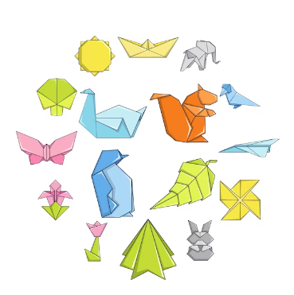
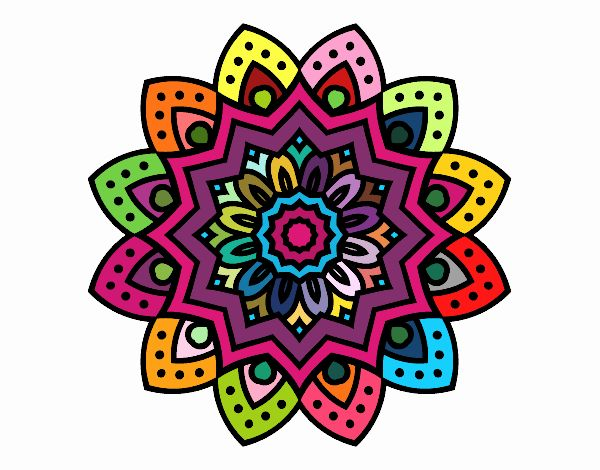
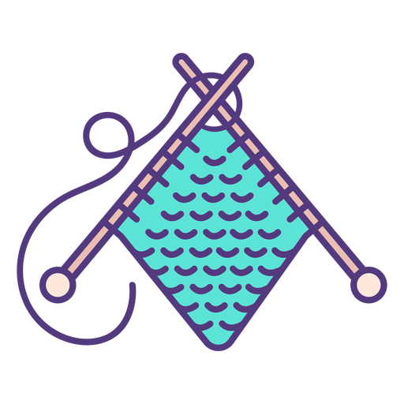
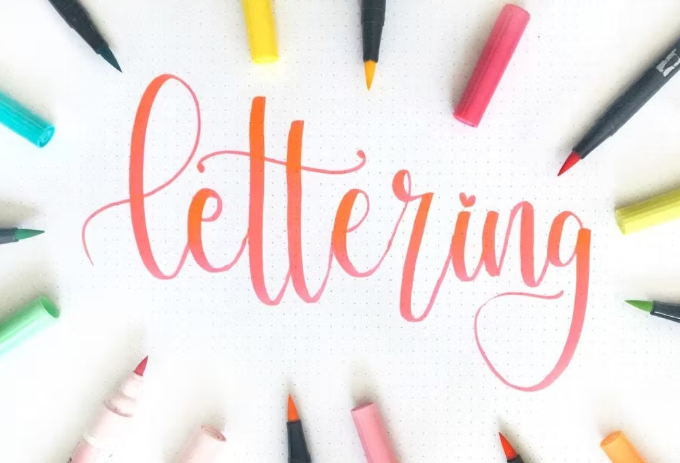
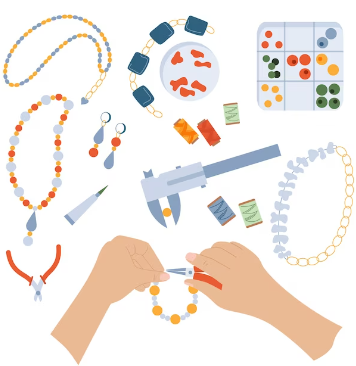
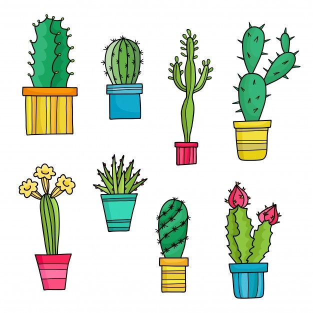
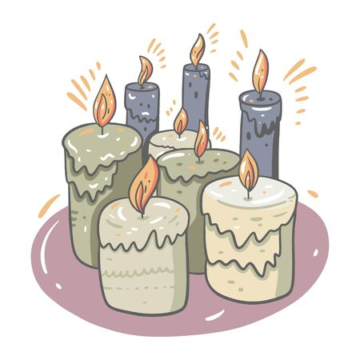
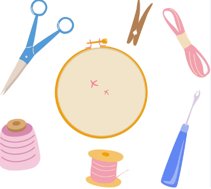

Nivel De Estres 1
Recomendaciones:
La música nos permite relajarnos a través de un proceso físico por el cual vibraciones de diferente origen se ajustan hasta lograr un mismo ritmo. Nuestro ritmo cardiaco puede, a través de la música, lograr valores normales (de 60 a 80 latidos por minuto) y una respuesta de relajación que disminuya la presión arterial.
Nivel De Estres 2
Recomendaciones:
Los juegos de mesa ayudan a aliviar el estrés al proporcionar una distracción agradable, fomentar la interacción social, liberar endorfinas, mejorar la concentración y ofrecer una sensación de logro y control en un entorno estructurado. Estas actividades ofrecen una forma efectiva de reducir la tensión y mejorar el bienestar emocional.

Nivel De Estres 3
Recomendaciones:
El yoga enseña que el control de la respiración es fundamental para tomar el control del cuerpo y calmar la mente. Además, en el yoga, se fomenta la inclusión de la meditación y la relajación en la práctica. La meditación permite aumentar la conciencia y estar presente en el momento actual sin juzgar.
Perro mirando hacia abajo

Guerrero III

Guerrero II

Luna creciente

Perro hacia arriba

El bote

Postura facil

Postura facil con mundra

Nivel De Estres 4
Recomendaciones:
La práctica de diversas manualidades ayuda a conectarnos con el presente, experimentar diferentes sensaciones físicas y prestar atención a la respiración, lo que puede ser una fórmula eficaz para liberarnos del estrés cotidiano. Además, al centrarnos en la creación de una obra de arte o proyecto, permitimos que nuestras preocupaciones se desvanezcan temporalmente, brindándonos un valioso alivio del estrés.
ORIGAMI
MANDALAS
TEJIDO
LETTERING
BISUTERÍA
PINTADO DE MACETAS
VELAS AROMATICAS
BORDADO
Nivel De Estres 5
Recomendaciones:
Cuando nos movemos, nuestro cuerpo libera diferentes neuroquímicos. Los receptores opioides se vuelven más activos y eso significa que nuestros umbrales de dolor aumentan, lo que nos hace sentir menos dolor cuando bailamos. Además, el baile ayuda a aliviar el estrés. Al mover nuestro cuerpo al ritmo de la música, liberamos endorfinas, que son conocidas por sus propiedades relajantes y que contribuyen a reducir los niveles de estrés.